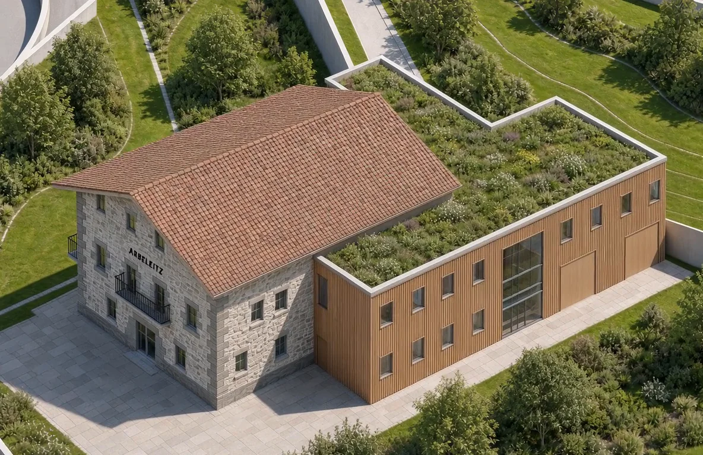
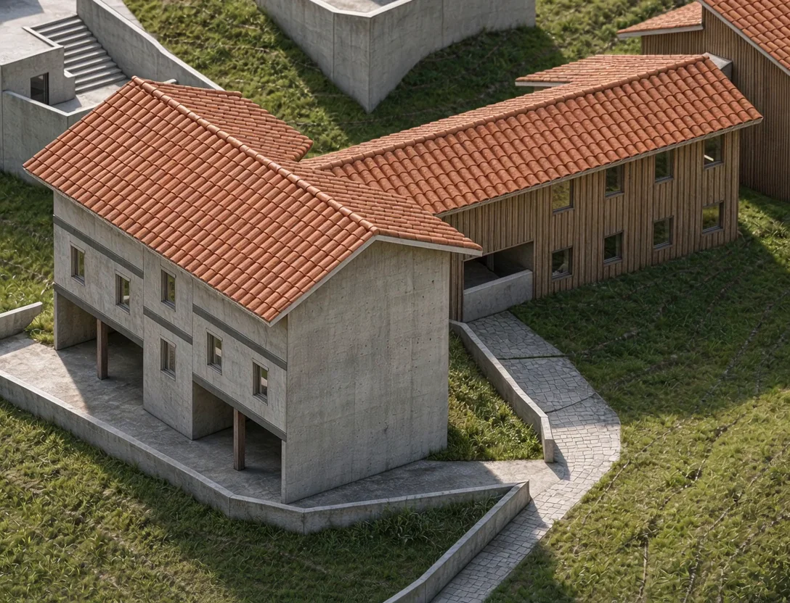
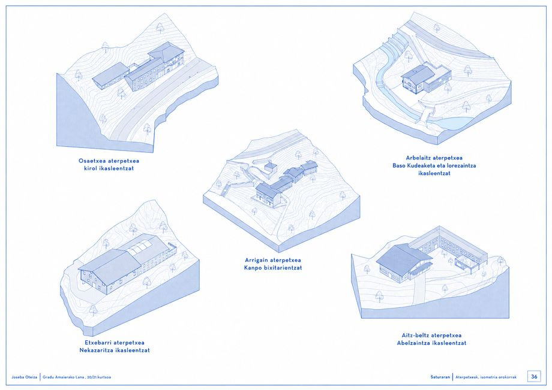
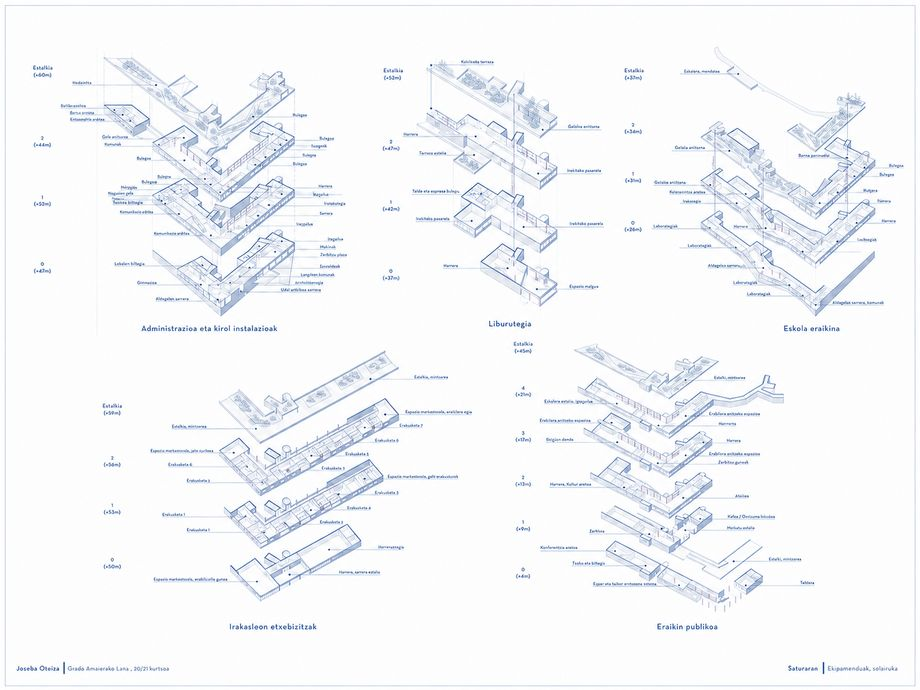
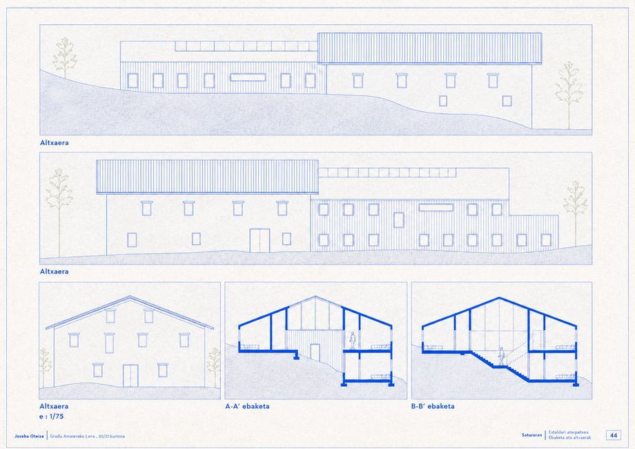
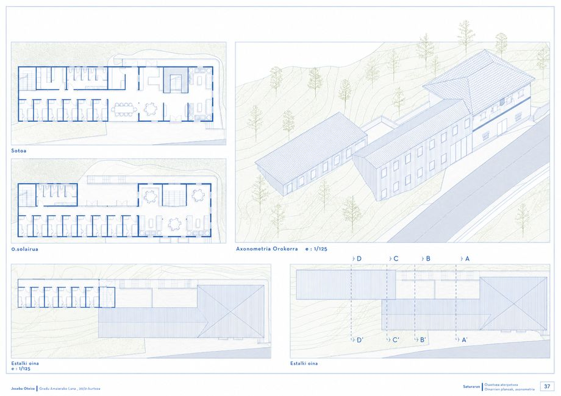

Trabajo Fin de Grado · UPV/EHU
Laboratorio Agro-Cultural · Saturraran
Regenerar un enclave costero fragmentado para activar el territorio todo el año, entre el bosque y el mar.

UbicaciónSaturraran, Mutriku (Gipuzkoa)
Año2019 – 2021
ProgramaEquipamiento agro-cultural, rehabilitación de caseríos y espacio productivo
RolProyecto académico individual completo
El proyecto
El enclave de Saturraran llegaba fragmentado: caseríos en desuso, un camping estacional y un paisaje de enorme valor que solo vivía en verano. El proyecto propone un laboratorio agro-cultural que combina la rehabilitación de los caseríos existentes con piezas nuevas de cubierta verde, integradas en la topografía del acantilado.
El modelo es productivo, educativo y comunitario: agricultura, formación y cultura activan el lugar durante todo el año, con una lectura territorial que va de la escala de paisaje al detalle constructivo.
Qué hice
- Lectura territorial y estrategia de regeneración a escala de paisaje.
- Proyecto de edificación integrada en topografía de acantilado.
- Rehabilitación de caseríos existentes y piezas de nueva planta.
- Narrativa gráfica completa: aéreas, secciones y axonometrías.
AutoCADRhinocerosPhotoshop
Ver los recorridos en vídeo 4 vídeos
Entre el bosque y el mar



Territorio, programa y construcción







